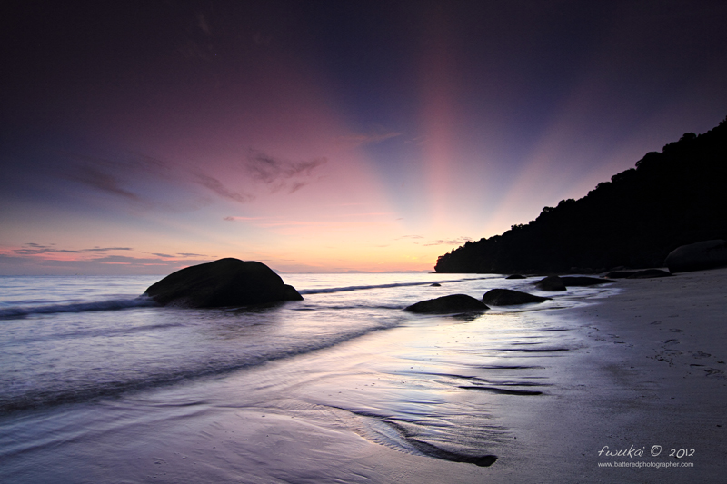
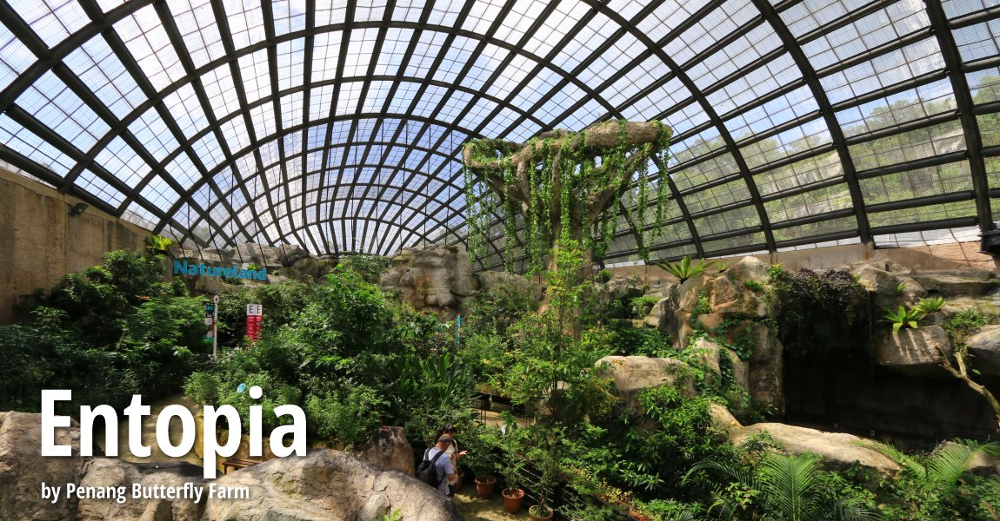
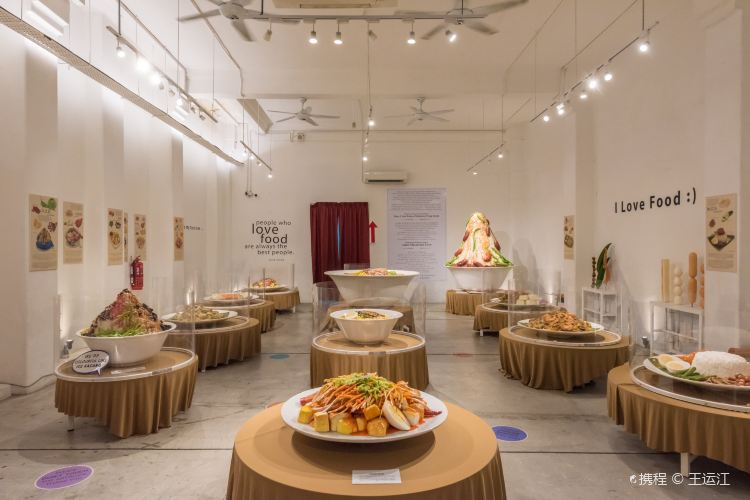
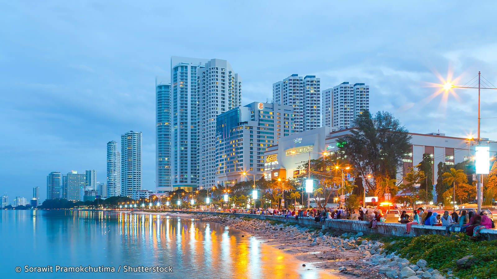
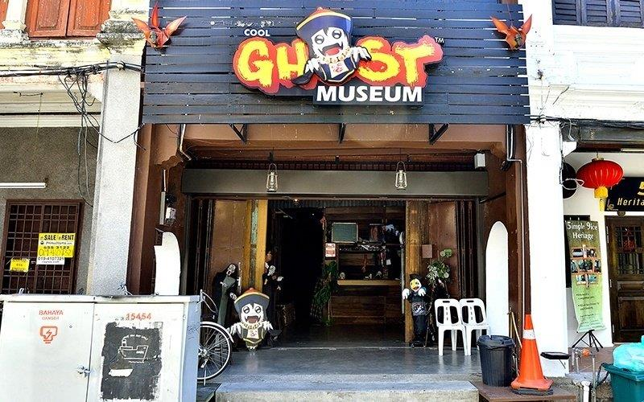

Penang, once Malaysia’s colonial jewel and now proud street art and food capital, is split between Penang Island and mainland Butterworth. Capital George Town’s historical centre includes dozens of colourful restored British colonial buildings, with traditional two-storey decorated shophouses lining the narrow streets. More curious travellers can stop by Butterworth, the hub connecting Penang and KL. This little-visited city offers colourful Chinese temples and views over the Straits and Penang Bridge.

Teluk Duyung
This remote, scenic beach with monkeys, water sports & snack shacks is reached by boat or a hike.
Address: Jalan Hassan Abas, Teluk Bahang, 11050 Tanjung Bungah, Pulau Pinang

Entopia
Contemporary indoor/outdoor place with live butterflies & other insects, plus interactive workshops.
Address: No.830, Jalan Teluk Bahang, Teluk Bahang, 11050, Pulau Pinang

Wonderfood Museum
Imaginative destination with replicas of Malaysian dishes, art & historical information
49, Lebuh Pantai, George Town, 10200 George Town, Pulau Pinang

Gurney Drive
Gurney Drive is a popular seafront promenade within George Town, Penang, Malaysia. The road is also famous for the street cuisine at the seafront's hawker centre and has been listed as one of the 25 best streets worldwide to visit by the Australian travel magazine, The Traveler.

Ghost Museum
Themed ghost story scenes featuring mannequins, plus costumes for visitors to wear for photos.
57, Lebuh Melayu, George Town, 10300 George Town, Pulau Pinang